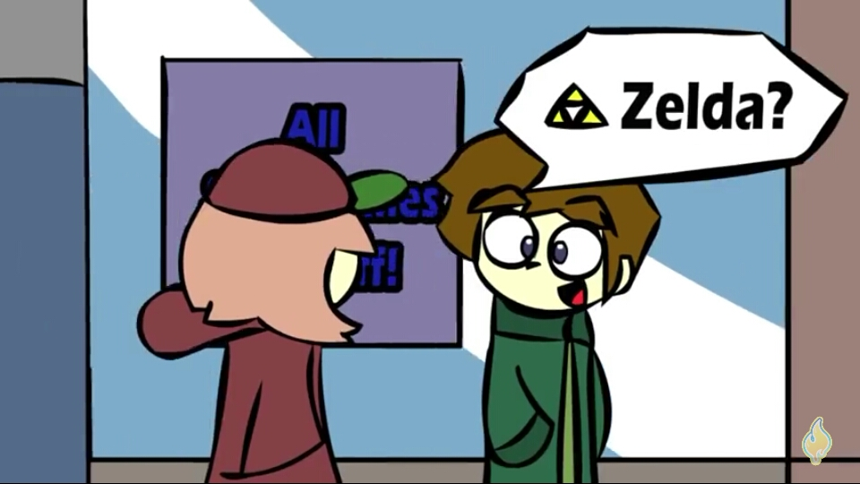
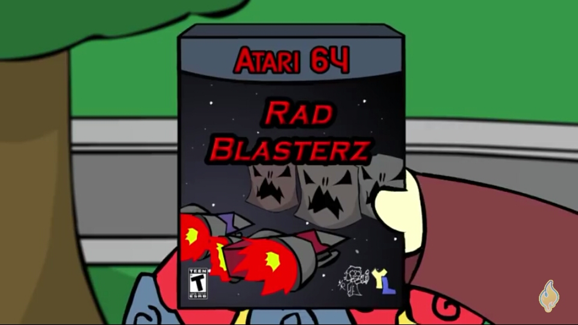
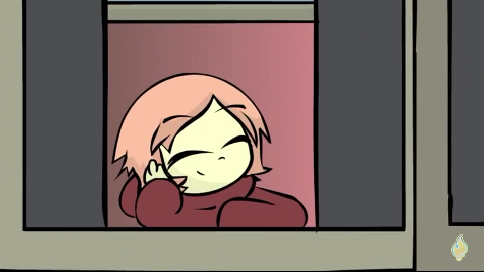

Gamerz, chão escorregadio
Criado em 10/07/21
Em 2017, eu estava rolando os vídeos recomendados do YoTube, quando então eu vi um vídeo com Tumb bem apelativa, curioso, eu resolvi clicar para assistir. Em uma loja videogames, um garoto estava analisando uma sessão de jogos, quando escutou pulos vindo de alguém ali por perto e ele foi até essa pessoa. Ela usava um moletom e um boné, tentava alcançar uma prateleira alta e não conseguia para pegar uma fita, ele facilmente alcançou e a entregou a ela. Eles passaram a conversar sobre jogos e de lá sairão caminhando pela loja.
A medida em que a conversa fluía, eles percebiam que tinham muitas coisas em comum, mas infelizmente, eles acabaram não percebendo que por onde estavam caminhando o chão estava escorregadio e eles acabaram caindo. A posição que eles ficaram após a queda foi constrangedora, a pessoa com a qual ele falava era na verdade uma garota e ele estava em cima. Um tapa ela deu e de lá saiu correndo envergonhada depois daquilo. Ele sem reação, não teve chance de falar nada, a única coisa que ela havia deixando cair foi o boné e ele ao olhar o interior do boné, encontrou o endereço dela escrito em uma etiqueta.
Ao chegar no endereço que encontrou, o garoto bateu na porta e um homem o atendeu, o garoto perguntou se havia alguma garota de cabelo curto cor-de-rosa e de olhos vermelhos, o homem afirma que sim e a chama. Ela sai de seu quarto e desse as escadas, vai até a porta, encara o garoto e fecha a porta. Novamente, ele bate e ela abre, o garoto entrega o boné e ela mais uma vez fecha. Insistente, ele bate outra vez e ela abre, desta vez, ele entrega um buquê de flores, a garota estanha e ao olhar melhor, vê que dentro do buquê havia a fita que ela queria pegar na loja.
Ela pucha o garoto levando-o para dentro de casa, subiu com ele pelas escadas e o levou para o seu quarto que era repleto de posts e jogos. Ela colocou a fita no videogame e juntos começaram a jogar. As horas passaram rápido e eles juntos conseguiram jogar o jogo por completo juntos. Quando eles terminaram de jogar, já era bem tarde e a mãe do garoto já o chamava de volta para casa. Na despedida, a garota entregou seu número de telefone e deu um beijo nele na porta da frente de casa e a fechou, subiu até a seu quarto e da janela observou o garoto partindo.
